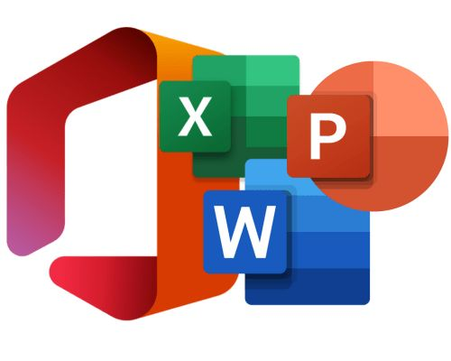
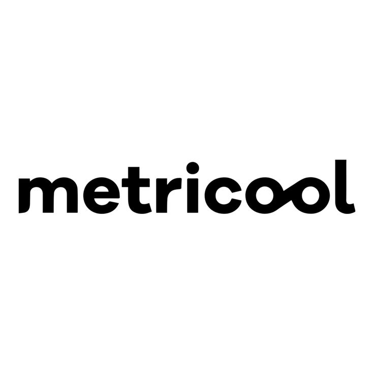

02
COMPÉTENCES & OUTILS
Comptabilité Générale
Grand Livre (Compte T), Balance, Bilan, Journal, Gestion de la TVA, Rapprochements bancaires.
Excel & VBA
Modélisation de données, automatisation sous Excel VBA, développement d'outils de gestion.
Logiciels & ERP
Sage Comptabilité, Suite Microsoft Office (Word, Excel, PowerPoint).
Création Web & CMS
Conception et gestion de sites internet avec WordPress (+ WooCommerce), PrestaShop, Wix.
Marketing Digital
Création de contenus (Visuel, Vidéo, Texte), gestion des réseaux sociaux et communication digitale.
Certification PIX
Recherche d'informations Web, téléchargement, sécurité et outils de communication.
Excel VBA
 WordPress
WordPress
PrestaShop
Wix
Sage

Office 365
Canva
Notion
Meta

Metricool